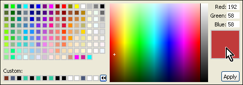

SVG Colorize
For SVG graphics, in Carbide.ui, we recommend that you do not use the
functions "Bitmap colorize" as this functions will turn the SVG into a
bitmap. Instead you should use the "SVG colorize" function which
preservers the SVG format of the graphics.
SVG colorizing is located in the Layers view.
Figure: SVG Colorizing
All colors defined inside the selected SVG are presented there in the
following structure: color rectangle, RGB definition of the color and
the number of occurrences of the color within the SVG.

To change the color, double click it to open the Color picker dialog or
hover over the color to change it using the color tool tip.

Figure: Color Picker
You can also modify colors of multiple items. In case of multiple
selected elements in Component view, Layers view displays only colors
that are present in all the selected components. You can change the
color in the same way as in the colorizing single SVG.